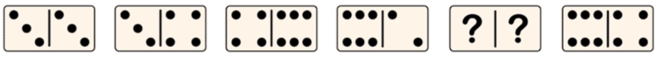

Ejercicio 1 Pregunta Determina la ficha de dominó que completa la sucesión. Tiempo estimado: 10 minutos  Realiza el debido procedimiento y plasma tu respuesta, para ello es necesario descargar la hoja de trabajo que esta a continuación Respuestas Opción 1 a) Opción 2 b) Opción 3 c) Opción 4 d) Retroalimentación Felicidades, lo hiciste genial. No te rindas tu puedes hacerlo. No te rindas tu puedes hacerlo. No te rindas tu puedes hacerlo. Solución Opción correcta (Retroalimentación) Incorrecto (Retroalimentación) Incorrecto (Retroalimentación) Incorrecto (Retroalimentación)